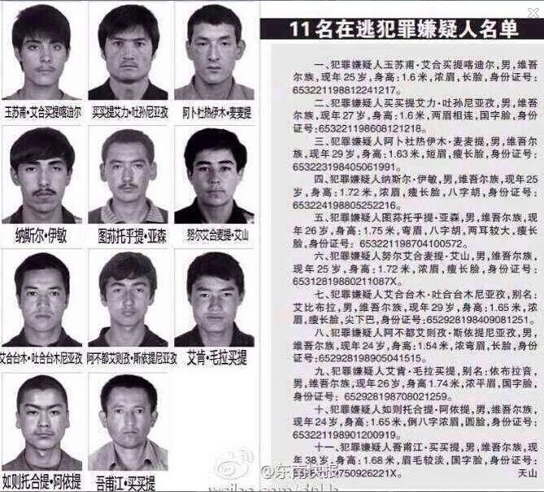

Conversation with 81184027 at Mon 03 Mar 2014 02:47:03 PM CST on 154115835 (webqq)
(03/03/2014 12:16:57 PM) 听雨聊君: 这是中国的群
(03/03/2014 01:40:21 PM) （）: 
(02:58:45 PM) 光: 环球时报：提敏感问题为何是境外记者的“特权” 2014年03月03日 09:35 来源：环球时报 8469人参与 123评论 原标题：单仁平：提敏感问题为何是境外记者的“特权” 在3月1日全国政协举行的首次新闻发布会上，香港《南华早报》的记者提到周永康的名字。该记者问：外界有很多关于周永康的报道，不知道政协有何回应？问题引来场内笑声。之后发言人说：“我和你一样，在个别媒体上得到一些信息。”他接着说，“无论什么人无论官职有多高，只要触犯党纪国法，就要严厉惩处。我只能回答成这样了，你懂的。”场内又笑。 关于周永康的传闻，大概已经充斥了中国大城市的“街头巷尾”。媒体上关于“神秘商人”周滨违法经商的报道也已经非常公开，此外四川省、中石油和政法 系统部分高官前一段落马，媒体做了“意味深长”的解读。但周永康的名字备受揣测后在中国媒体上第一次提及，借的是昨天政协记者会机会，提出者则是一名中国 大陆之外的媒体人。 调查显然还没结束，可以用来对外宣布的结论大概也还没有，所以尽管中国市场化媒体纷纷抡圆了胳膊打擦边球，但官方就是不接招，那个关键的名字就是没人提，媒体上演了罕见的“旁敲侧击”和“影射”战术，以致“该懂的人全看懂了”，但就是不破题。 官方有什么不对吗？涉及那么高的前官员，必然要经历一个调查过程，能不谨慎吗？在媒体上把一个人的名字点出来，这在中国与在西方的含义很不一样。没有百分百的确定性，那么做不会被鼓励。 然而完全不在媒体上提他的名字，做得到吗？如今看也不行了。两会每天都有公开的记者会，它们可都是现场直播的，即使中国大陆记者克制了，来自境外的记者会客气吗？后者当然要充分行使他们的“特权”，专问大陆记者“无法问”的问题。 有人说两会的记者会“好看”，就“好看”在境外记者的“胡乱问”上。他们在一些问题上的挑衅当然招人讨厌，但他们有时能突破一些中国国内的“禁忌”。 这样一来，两会让中国公众看到了国内记者在境外同行面前的“弱势”，展示了境外特别是西方记者的“强势”和“客观”。中国国内记者问的问题相对“容易回答”，外部记者的问题更富于挑战，因此对普通中国公众来说，后者“更像记者”。 这是中国软实力的一个困局。中国针对敏感问题的现行做法有着强大的国内真实理由，几乎“不这么做不行”。这么做在维护一件件具体事情顺利的同时，却伤及了国家主流媒体的公信力。我们知道在这个时代，这种公信力对国家的长远利益是多么重要。 这个问题是需要认真对待并逐渐加以克服的。解决它的确很难，甚至不是宣传部门就能驾驭的，但它决不应被放在那里听之任之。因为它好像没什么代价，但每一次都是由国家的软实力为它埋单。 一些官员认为主流媒体可以为了配合政府做事而牺牲一点自己的声誉，他们这样想真的错了。中国现在最大的问题是主流舆论的影响趋弱，它已是中国长期稳 定的头号挑战之一。针对它做根本性改善是一项复杂的任务，政府千万别把它全推给媒体，这需要中国全社会的共同探索和努力。▲(作者是环球时报评论员)
(02:58:55 PM) 光: http://news.ifeng.com/mainland/special/2014lianghui/content-2/detail_2014_03/03/34357789_0.shtml